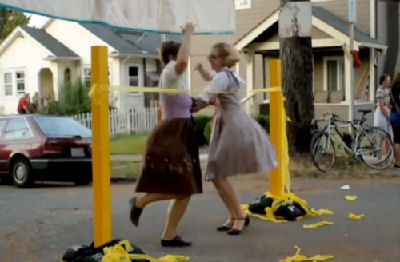

NEPO 5k Don't Run 2011

Watch an excellent video by Britta Johnson titled Replay.
Team Building Exercise, The Trailer from Max Kraushaar on Vimeo.
-------------------------------------------------------------------------Many, many thanks
to team NEPO and all the talented, hardworking and super responsible(!) artists who made NEPO 5k Don't Run so extraordinarily special! Also thanks to all (p)articipants for coming (and not running), thanks to Seattle for being a cool city and thanks to whoever is up there for the great weather!
-------------------------------------------------------------------------This event is made possible by generous grants from Sprout Seattle, 4Culture, Seattle Office of Arts & Cultural Affairs and Beacon Hill Merchants. Thank you!
Thank you 911 Media Arts for lending your technical expertise and equipment support.
Brought to you by NEPO House with warm greetings from Team NEPO: Klara Glosova, Amanda Manitach, Bond Huberman, Rumi Koshino and Leanne Grimes. With support from Todd Jannausch, Erin Shafkind, Susanna Bluhm and Seth Damm. Banners by Francesca Lohmann. Logo by Troy Gua.
NEPO House is an Associated Program of Shunpike.
---------------------------------------------------------------------------NEPO 5k Don't Run in the press:
City Arts Magazine Don't Run by Kelly Igoe.
The Seattle Times: 'NEPO 5k Don't Run' takes art walking to great lengths by Michael Upchurch.
The Stranger: Hobble, Trek, Stumble, Trot by Jen Graves
KPLU: On Beacon Hill, a house is both home and public art gallery by Florangela Davila.
The Stranger's Slog: NEPO 5k: The Monday After by Jen Graves.
Gingham and Gold: Whatever we did, we DIDN'T run! by Carrie Clogston.
Molo's Sketchbook: NEPO 5K Walk don't run by Ryan Molenkamp.
Misc media: What I did last weekend by Clark Humphrey.
Mater Matrix Mother and Medium: Last days of Seattle summer recap: NEPO 5k walkers/crocheters, making support for MMMM in NYC by Mandy Greer.
For more photos visit Dan Bennett's Flickr set.